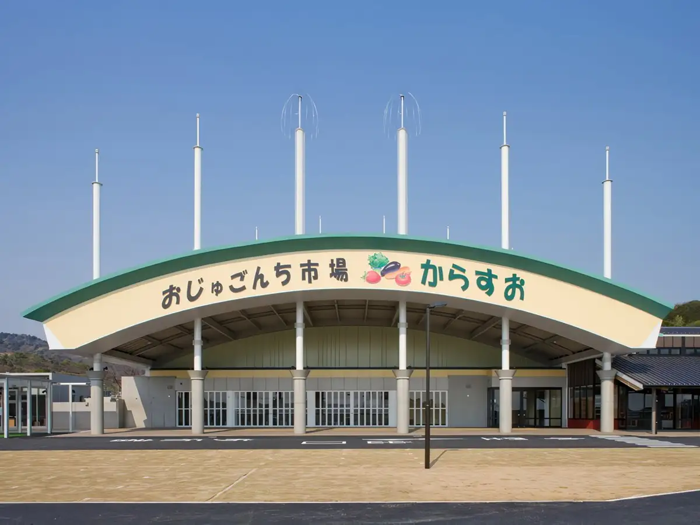
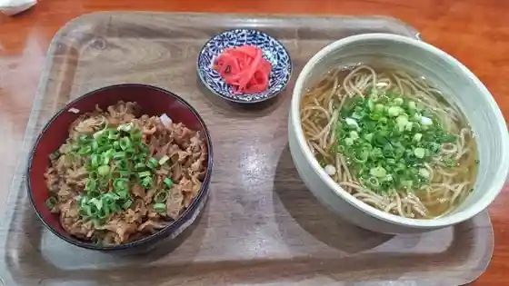
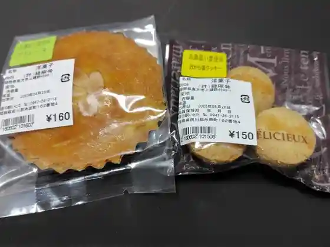
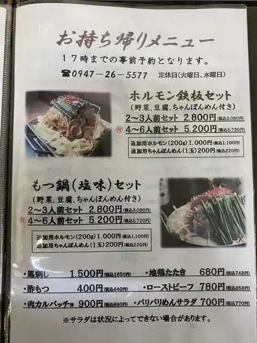
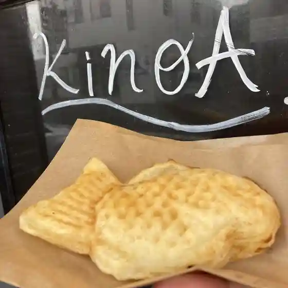
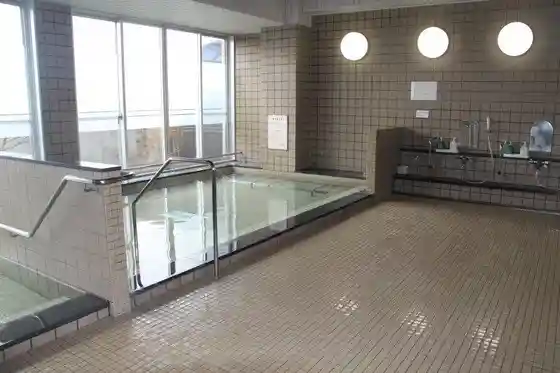
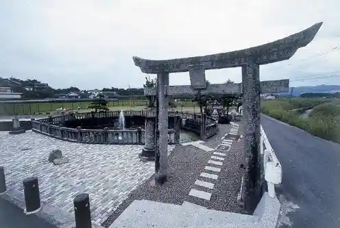
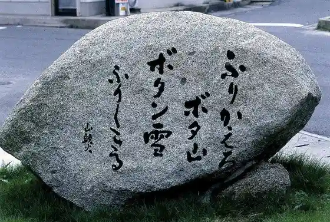

Itoda
Itoda · Fukuoka
Itoda
Highlighted on the Fukuoka map.

Dining
博多 豚十郎
Hakata Buta Juurou
バニーズ
Baniizu

うどん 日月
Udon Nichigetsu
ボヌール
Bonuuru

おじゅごんち市場 からすお
Ojugonchi Shijou Karasuo

しんかい
Shinkai

KinoA
KinoA
にんきや
Ninkiya
大熊ホットドッグ&たこ焼
Ookuma Hottodoggu & Tako Yaki
とり丸 糸田本店
Tori Maru Itoda Honten
うどん処 味彩
Udon Tokoro Aji Sai
YUMEYA
YUMEYA
大熊ホットドッグ&たこ焼
Ookuma Hottodoggu & Tako Yaki
雅致夜
Gachi Yoru
リスリス
Risurisu
美味食処まんぴん
Bimi Shoku Tokoro Manpin
糸田すっぽん養殖場
Itoda Suppon Youshokujou
彩花亭
Ayahana Tei
ペペル・モコ
ペペル・モコ
からあげももちゃん
Karaagemomochan
唐揚げ 泰平
Karaage Taihei
千成食堂
Sennari Shokudo
ひまわり食堂
Himawari Shokudo
居酒屋一鈴
Izakaya Ichi Suzu
Michi No Eki Itoda Nikukobo Tagiri
Michi No Eki Itoda Nikukobo Tagiri
Yokiya
Yokiya
Michi No Eki Itoda Tachigui Denai Tachigui Namamen
Michi No Eki Itoda Tachigui Denai Tachigui Namamen
Ramen Tonkatsu Unryu
Ramen Tonkatsu Unryu
Okan to Oden No Mise Yamachan
Okan to Oden No Mise Yamachan
Michi No Eki Itoda Tagiri
Michi No Eki Itoda Tagiri
Kuraya
Kuraya
Ikkakuya Bonheur
Ikkakuya Bonheur
Izakaya Ichirin
Izakaya Ichirin
Izakaya Kosen
Izakaya Kosen
Sights
Roadside Station Itoda
Tagiri Baths

Hi Izumi

Kanayama Ajisai Sono
Santoka to Ryokuhei no Kuhi

Itoda Fureai City
Kanayama Sakura Sono